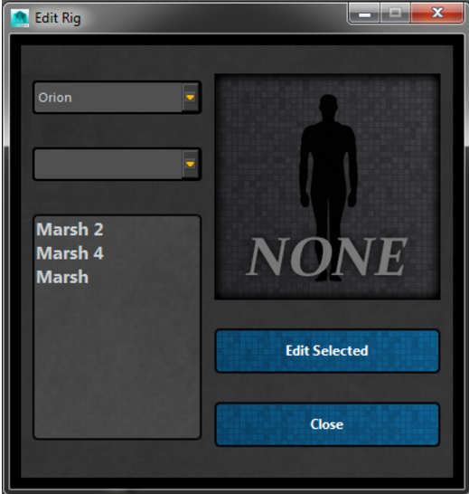

ART_EditRigUI¶
Author: Jeremy Ernst
-
class
Interfaces.ART_EditRigUI.ART_EditRigUI(edit, add, parent=None)[source]¶ This class builds a tool that allows a user to Edit a Rig or Add Character for Animation. Both functions use the same interface. The title and button text get swapped out depending on which situation has been called for by the A.R.T.2.0 menu.
-
__init__(edit, add, parent=None)[source]¶ Instantiates the class, getting the QSettings and building the interface.
Parameters: - edit – Whether or not the operation is to edit the rig.
- add – Whether or not the operation is to add the character for animation.
-
addSelected(*args)[source]¶ Finds the selected character, and references that file into the currently opened scene. The path is constructed using the QSettings info, with any group as a subfolder, and lastly the selected asset/character as the last part of the path.
Also handles namespaces, adding the new namespace to the network node of the added asset, and launches the animationUI.
-
createUI()[source]¶ Builds the UI, listing options for choosing a project and showing all assets belonging to that project for edit or add.
-
editSelected(*args)[source]¶ Find the selected character, and open that file for edit. The path is constructed using the QSettings info, with any group as a subfolder, and lastly the selected asset/character as the last part of the path.
-
populateCharacters()[source]¶ Given the selected project and group, populate the QListWidget with any assets found using that information. The project path comes from the QSettings, the group is a subfolder of the project.
-
populateGroups()[source]¶ Given the selected project, populate any groups for that project (using the project path from QSettings) and add them to the groups QComboBox.
Then, call on populateCharacters.
See also
ART_EditRigUI.populateCharacters()
-
populateIcon(*args)[source]¶ Given the selected character, display the correct icon for that character in the UI.
-
-
Interfaces.ART_EditRigUI.getMainWindow()[source]¶ Get Maya’s window as a QWidget and return the item in memory.
Returns: a QWidget of Maya’s window